The MinVol OMA is an Order Management Algo (OMA) that lets you specify a minimum quantity required at a price level to work an exchange order. The algo will cancel the order if the volume drops below the minimum quantity. If the volume builds back up to the required quantity, the algo will re-submit the order. You can also specify the maximum number of times the algo will submit an exchange order.
Limitations for adopting orders
The MinVol OMA can adopt exchange orders, TT Order Types, Synthetic Order Algos (SOAs) created in ADL and child orders of other algos. It cannot, however, adopt:
-
TT Order Type parent orders
-
Autospreader® parent orders
-
Aggregator parent orders
-
OTC orders
Launching the MinVol OMA from MD Trader
As an order-builder algo, you can launch the MinVol OMA for a new order in MD Trader. You can also apply the algo to an existing order in MD Trader.
To launch a new order using the MinVol OMA:
-
From the OMA Algos section of the Order Type dropdown, select MinVol.
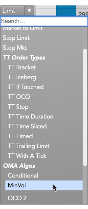
The parameters flyout appears.
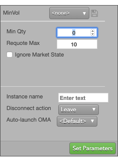
-
Set the following parameter values; then click Set Parameters.
-
Min Qty: Sets the minimum quantity that must be available at the price level to work the child order. When the available quantity drops below this value, the MinVol algo cancels the order,
-
Requote Max: Sets the maximum number of times the MinVol algo will resubmit its child order. When this value is reached, the algo is suspended.
The MinVol OMA order builder dialog appears and the MD Trader Header panel changes to yellow to indicate that you are now in order builder mode.
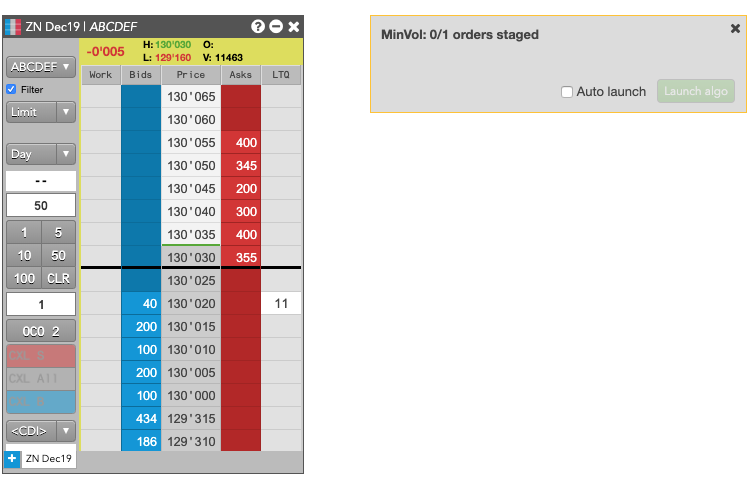
-
In MD Trader, set the order type and associated parameter values for the child order; then place the order by clicking the desired price level.
The order appears in the MinVol order builder dialog and the MinVol OMA parent order is submitted and is displayed in MD Trader.
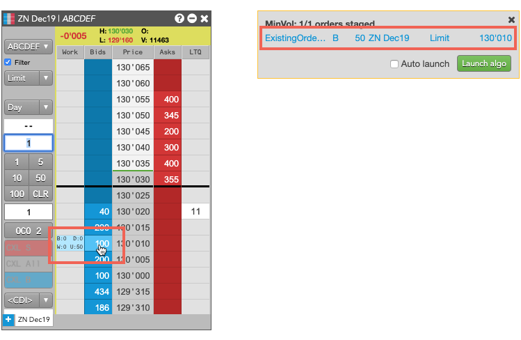
Note: The order is in a Hold state until you launch the algo.
-
Click
 .
Note: You can also enable Auto-launch in Preferences to launch the algo automatically when you place the order.
Based on whether the market has sufficient available quantity, the order wil resemble the following.
.
Note: You can also enable Auto-launch in Preferences to launch the algo automatically when you place the order.
Based on whether the market has sufficient available quantity, the order wil resemble the following.
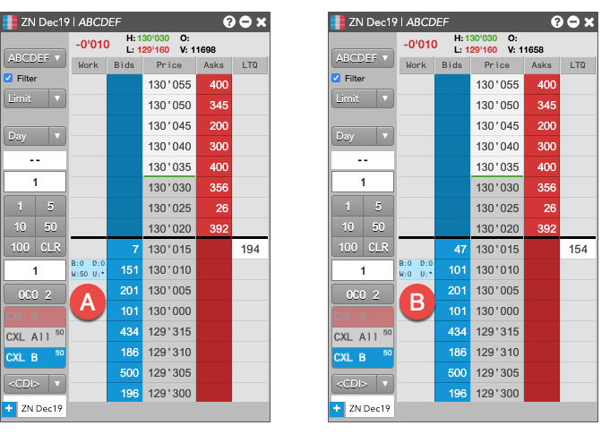
-
A: When the available quantity meets the threshold, the working quantity is non-zero.
-
B: When the available quantity is insufficent, the working quantity is 0.
-
If desired, you can also monitor the status of the MinVol OMA in the order book.
-
When the available quantity is below the specified minimum quantity, the Order Book resembles the following.
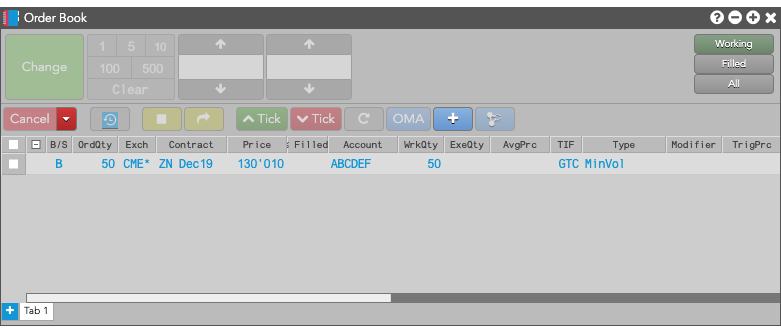
-
When the available quantity is sufficient, the Order Book resembles the following.
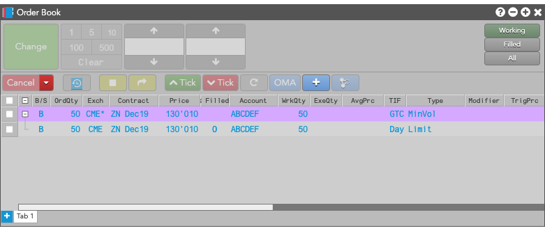
Launching the MinVol OMA from the Order Book
To launch the MinVol OMA from the Order Book:
-
Select the order you want to manage.
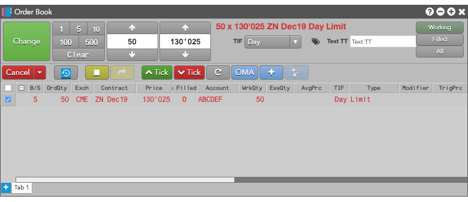
-
Click the OMA button and select MinVol from the dropdown.
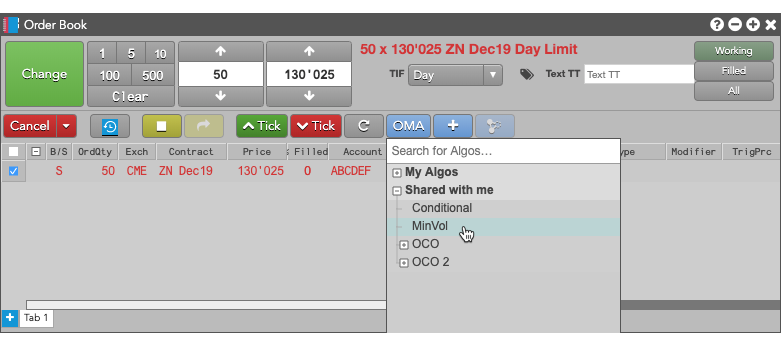
The MinVol flyout appears.
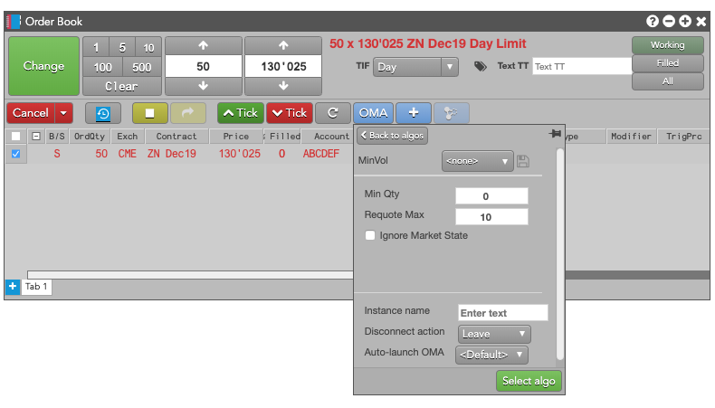
-
Enter the desired MinVol parameters and click Select Algo.
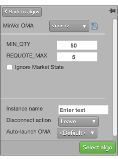
The MinVol parent order appears with the selected order as its child order.
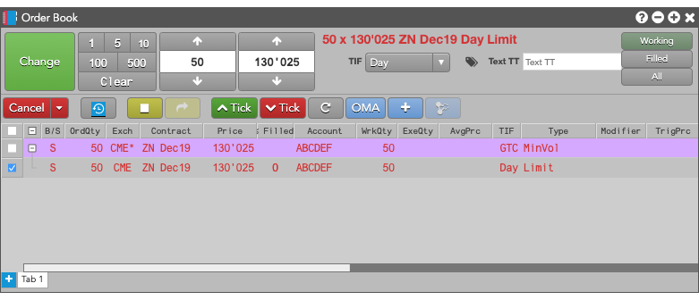
Monitoring the requote count
As the available quantity at the selected price level fluctuates, the MinVol OMA will delete and resubmit orders until the order is filled or until the number of times the algo resubmitted the child order reaches the specified maximum. You can monitor the number of times the MinVol OMA has sumbitted its child order from the Algo Dashboard. The MinVol OMA displays the infomration in the RequoteCount column, as shown.
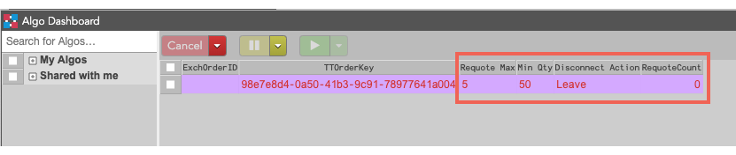
Canceling MinVol parent orders
If you cancel the parent order of an MinVol parent order, the parent order is deleted and:
-
Child orders added from existing orders will remain working in market.
-
Child orders added as new orders will be deleted.
MinVol OMA parameters
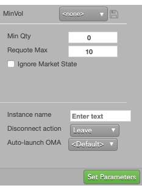
The MinVol OMA uses the following parameters:
-
Min Qty: Minimum quantity that must be available at the price level to work the child order. When the available quantity drops below this value, the MinVol algo cancels the order,
-
Requote Max: Maximum number of times the MinVol algo will resubmit its child order. When this value is reached, the algo is suspended.
-
Ignore Market State: Whether to ignore the market state when submitting the parent MinVol OMA.
-
Instance name: Optional name for this algo instance.
-
Co-location: Location of the Algo Server to run this algo.
The Co-location drop down is seeded based on the market of the default instrument in the selected algo. It will also seed when multiple instruments are defined if all instruments are from the same market.
-
Disconnect action: Action to take if the client loses its connection to TT:
- Leave to allow the algo to continue running normally.
- Pause to suspend the algo until you manually restart it.
- Cancel to delete the algo.
Note: You can set the default Disconnect action in the Preferences